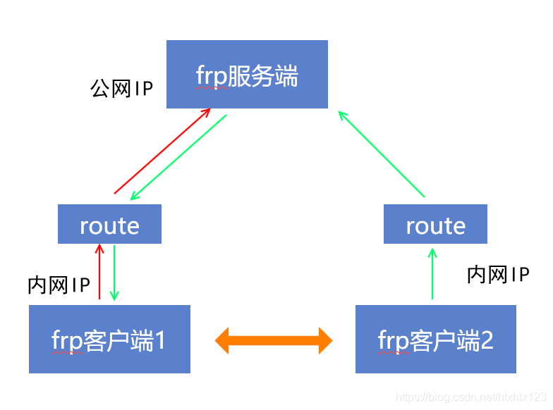

内网穿透frp
内网穿透是指在内网环境中，将内网服务暴露到公网上的技术。它可以让外部用户访问内网中的服务，而不需要进行复杂的网络配置。内网穿透通常用于远程访问、远程控制、远程调试等场景。 frp 是一个高性能的反向代理应用，专注于内网穿透。它可以将内网服务暴露到公网上，方便外部访问。frp 的使用非常简单，只需要在内网和公网各部署一个 frp 实例即可。
frp 的工作原理
frp 的工作原理是通过在内网和公网之间建立一个长连接，将内网服务的请求转发到公网。具体来说，frp 在内网和公网各部署一个 frp 实例，内网实例负责将内网服务的请求转发到公网实例，公网实例负责将外部请求转发到内网实例。这样就实现了内网穿透。 frp 的工作原理如下图所示：
{kind=link}
服务器端部署
服务器必须有 公网IP 地址，且可以访问互联网。frp 的服务器端称为 frps，客户端称为 frpc。frps 负责接收来自 frpc 的请求，并将请求转发到内网服务。
- 下载 frp
在服务器上下载 frp 的最新版本，可以在 [frp 的 GitHub 页面](https://github.com/fatedier/frp/releases) 上找到最新版本的下载链接。下载完成后，解压缩文件。 这里以 Linux 系统为例，使用以下命令下载和解压缩 frp：
1#下载
2wget https://github.com/fatedier/frp/releases/download/v0.62.1/frp_0.62.1_linux_amd64.tar.gz
3#解压
4tar -zxvf frp_0.62.1_linux_amd64.tar.gz
5#重命名解压后的文件夹为 frp
6mv frp_0.62.1_linux_amd64 frp
- 配置 frp
进入 frp 目录，找到 frps.toml 配置文件。
1#客户端连接端口，默认7000
2bind_port = 7000
3#web界面网址，默认为 127.0.0.1，如果需要公网访问，需要修改为 0.0.0.0。
4webServer.addr = "0.0.0.0"
5#web界面端口，默认7500
6webServer.port = 7500
7#web界面用户名密码，可选，默认为空
8webServer.user = "admin"
9webServer.password = "admin"
- 启动 frp
在 frp 目录下，使用以下命令启动 frps：
1#启动 frps
2./frps -c ./frps.toml
- 查看 frp 状态
启动成功后，可以在浏览器中访问 http://<公网IP>:7500 来查看 frp 的状态。默认的用户名和密码都是 admin。 如果需要修改用户名和密码，可以在 frps.toml 中修改 webServer.user 和 webServer.password。 如果需要修改端口，可以在 frps.toml 中修改 webServer.port。 如果需要修改地址，可以在 frps.toml 中修改 webServer.addr。 如果需要修改其他配置，可以在 frps.toml 中修改其他配置。
- 开机自启
如果需要开机自启，可以将 frps 的启动命令添加到系统的开机启动项中。具体方法可以参考系统的相关文档。 这里以 Linux 系统为例，使用以下命令添加开机启动项：
1 #进入系统配置目录
2 cd /etc/systemd/system/
3 #创建 frps.service 文件
4 sudo nano frps.service
5
6 #添加以下内容
7 [Unit]
8 # 服务名称，可自定义
9 Description = frp server
10 After = network.target syslog.target
11 Wants = network.target
12
13 [Service]
14 Type = simple
15 User = root #好多教程没有这一条，导致无法自启动
16 # 启动frps的命令，需修改为您的frps的安装路径
17 ExecStart = /root/frp/frps -c /root/frp/frps.toml
18
19 [Install]
20 WantedBy = multi-user.target
21 #保存并退出
22 #启动服务
23 sudo systemctl start frps
24 #设置开机自启
25 sudo systemctl enable frps
26 #查看服务状态
27 sudo systemctl status frps
28 #停止服务
29 sudo systemctl stop frps
30 #重启服务
31 sudo systemctl restart frps
客户端部署
客户端必须有 内网IP 地址，且可以访问互联网。frp 的客户端称为 frpc。frpc 负责将内网服务的请求转发到公网服务。 这里以树莓派4B为例，介绍如何在树莓派上部署 frp 客户端。
- 下载 frp
在客户端上下载 frp 的最新版本，可以在 [frp 的 GitHub 页面](https://github.com/fatedier/frp/releases) 上找到最新版本的下载链接。下载完成后，解压缩文件。
1 #下载
2 wget https://github.com/fatedier/frp/releases/download/v0.62.1/frp_0.62.1_linux_arm64.tar.gz
3 #解压
4 tar -zxvf frp_0.62.1_linux_arm64.tar.gz
5 #重命名解压后的文件夹为 frp
6 mv frp_0.62.1_linux_arm64 frp
- 配置 frp
进入 frp 目录，找到 frpc.toml 配置文件。
1 #web界面网址，默认为127.0.0.1，如果需要公网访问，需要修改为0.0.0.0
2 webServer.addr = "0.0.0.0"
3 webServer.port = 7300
4 webServer.user = "admin"
5 webServer.password = "admin"
6
7 #服务器地址
8 #阿里云服务器公网IP
9 #serverAddr = "8.8.8.8"
10 #腾讯云服务器公网IP
11 serverAddr = "8.8.8.8"
12 #百度云服务器公网IP
13 #serverAddr = "8.8.8.8"
14
15 #服务器端口
16 serverPort = 7000
17
18 [[proxies]]
19 name = "SSH服务"
20 type = "tcp"
21 localIP = "127.0.0.1"
22 localPort = 22
23 remotePort = 6022
24
25 [[proxies]]
26 name = "web服务"
27 type = "tcp"
28 localIP = "127.0.0.1"
29 localPort = 8080
30 remotePort = 10081
31
32 # frpc.toml
33 [[proxies]]
34 name = "frp配置"
35 type = "tcp"
36 localPort = 7300
37 remotePort = 7300
- 启动 frp
在 frp 目录下，使用以下命令启动 frpc：
1#启动 frpc
2./frpc -c ./frpc.toml
- 查看 frp 状态
启动成功后，可以在浏览器中访问 http://<内网IP>:7300 来查看 frp 的状态。默认的用户名和密码都是 admin。 如果需要修改用户名和密码，可以在 frpc.toml 中修改 webServer.user 和 webServer.password。 如果需要修改端口，可以在 frpc.toml 中修改 webServer.port。 如果需要修改地址，可以在 frpc.toml 中修改 webServer.addr。 如果需要修改其他配置，可以在 frpc.toml 中修改其他配置。
- 开机自启
如果需要开机自启，可以将 frpc 的启动命令添加到系统的开机启动项中。具体方法可以参考系统的相关文档。 这里以 Linux 系统为例，使用以下命令添加开机启动项：
1 #进入系统配置目录
2 cd /etc/systemd/system/
3 #创建 frpc.service 文件
4 sudo nano frpc.service
5
6 #添加以下内容
7 [Unit]
8 # 服务名称，可自定义
9 Description = frp client
10 After = network.target syslog.target
11 Wants = network.target
12
13 [Service]
14 Type = simple
15 User=nobody #好多教程没有这一条，导致无法自启动
16 Restart=on-failure
17 RestartSec=5s
18 # 启动frpc的命令，需修改为您的frpc的安装路径
19 ExecStart = /home/pi/frp/frpc -c /home/pi/frp/frpc.toml
20
21 [Install]
22 WantedBy = multi-user.target
23 #保存并退出
24 #启动服务
25 sudo systemctl start frpc
26 #设置开机自启
27 sudo systemctl enable frpc
28 #查看服务状态
29 sudo systemctl status frpc
30 #停止服务
31 sudo systemctl stop frpc
32 #重启服务
33 sudo systemctl restart frpc